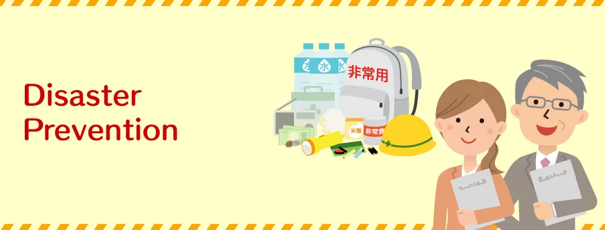

Expanded Nursing Uganda Explanation
Artificial prevention should be reviewed through safe maternal and newborn assessment, early recognition of danger signs, respectful communication and timely referral. Connect the definition to vital signs, bleeding, fetal or newborn wellbeing, patient education and local protocol requirements.
01 ARTIFICIAL DISASTER PREVENTION
- Enforcement of Road Traffic Regulations: Strictly enforce the Road Traffic Act 1998, as amended, to ensure compliance with traffic laws. This includes monitoring speed limits, seatbelt usage, and other safety regulations to prevent accidents.
- Education on Safe Road Usage: Conduct comprehensive awareness campaigns to educate drivers and passengers on safe road usage. Promote responsible driving behavior, adherence to traffic rules, and the importance of defensive driving techniques.
- Introduction of Urban Bus Transport: Introduce efficient and reliable bus transport systems in urban centers. This encourages the use of public transportation, reducing the number of private vehicles on the roads and minimizing traffic congestion and accidents.
- Improved Road Infrastructure: Enhance road quality by investing in infrastructure development. Construct additional entry and exit roads for major urban centers like Kampala and improve existing road networks to accommodate increasing traffic flow and ensure safer journeys.
- Establishment of Emergency Facilities: Set up well-equipped hospital emergency facilities along major highways to provide immediate medical assistance in the event of accidents. This helps to reduce response time and save lives.
- Public/Private Partnership for Road Improvement: Encourage public/private partnerships to invest in road quality improvement and network expansion projects. This collaboration enhances the resources and expertise available for infrastructure development, leading to safer and more efficient transportation.
- Water Transport Safety Standards: Establish and enforce safety standards for water transport on Uganda’s major lakes. This includes implementing regulations on vessel maintenance, equipment standards, and crew training to ensure safe and secure water transportation.
- Supervision and Monitoring of Water Transport: Intensify supervision and monitoring of water transport systems to ensure compliance with safety regulations. Regular inspections, enforcement of licensing requirements, and training programs for boat operators contribute to safer water transport operations.
- Enforcement of Codes of Conduct: Enforce strict codes of conduct among staff responsible for checking and regulating transport systems. This ensures accountability, discourages corruption, and promotes a culture of safety and professionalism.
- Institute severe measures and regulations to halt bush burning practices, imposing strict punishment through bye-laws and ordinances.
- Ensure the installation of firefighting equipment in key locations to enable swift response in case of fire outbreaks.
- Establish building codes that specify fire escape routes, the use of fire-resistant materials, and the implementation of fire detection systems.
- Raise awareness among the public about the causes of fires and educate them on preventive actions to mitigate the risk of fire outbreaks.
- Regularly inspect electrical installations to identify and rectify potential hazards that may lead to fires.
- Conduct regular fire drills in public places and educational institutions to prepare individuals for emergency situations and ensure a prompt and efficient response.
- Equip fire brigade institutions with the necessary resources, including training, equipment, and personnel, to effectively combat fires.
- Establish regional fire facilities strategically located to address emerging fire-related challenges in different areas.
- Develop partnerships with companies, organizations, and institutions that possess relevant firefighting equipment and rescue facilities to enhance the firefighting capabilities across the country.
Before a Fire:
- Install smoke alarms throughout your residence. These devices significantly reduce the likelihood of fatalities in fires. Place them on every level, outside bedrooms, at the top of stairways, and near the kitchen.
- Regularly test and clean smoke alarms, replacing batteries at least once a year. It’s also important to replace smoke alarms every 10 years.
- Maintain a record of the fire brigade’s contact information, keeping it safe and accessible to all family members.
- Educate people about fire prevention and escape mechanisms to ensure they are well-informed and prepared.
Escaping the Fire:
- Review escape routes with your family and practice evacuation drills from each room.
- Ensure windows are easily opened and not obstructed. Install security gratings with fire safety openings to allow for easy escape.
- Consider using escape ladders for multi-level residences and ensure that burglar bars and other security features can be quickly opened from the inside.
- Teach family members to stay low to the floor, where the air is safer, when escaping a fire.
- Avoid accumulating flammable materials in storage areas, regularly disposing of trash, newspapers, and other combustible items.
Dealing with Flammable Items:
- Never use gasoline, benzene, or similar flammable liquids indoors.
- Store flammable liquids in approved containers within well-ventilated storage areas.
- Avoid smoking near flammable liquids and properly dispose of materials soaked in these liquids in outdoor metal containers.
- Insulate chimneys and install spark arresters to minimize the risk of fire. Clear branches hanging above and surrounding the chimney.
Heating Sources:
- Exercise caution when using alternative heating sources and maintain a safe distance (at least three feet) from flammable materials.
- Ensure heaters are properly insulated on the floor and nearby walls. Adhere to the manufacturer’s instructions and use only designated fuel.
- Store ashes in a metal container away from the residence.
- Keep open flames away from walls, furniture, drapery, and other flammable items. Install a screen in front of fireplaces.
- Regularly inspect and clean heating units with the assistance of certified specialists.
Matches and Smoking:
- Store matches and lighters out of children’s reach, preferably in a locked cabinet.
- Avoid smoking in bed, when drowsy, or under the influence of medication. Provide smokers with deep, sturdy ashtrays and extinguish cigarette butts with water before disposal.
Electrical Wiring:
- Have the electrical wiring in your residence inspected by a professional electrician.
- Regularly check extension cords for frayed or exposed wires and loose plugs.
- Ensure outlets have cover plates and no exposed wiring. Avoid running wires under rugs or across high-traffic areas.
- Avoid overloading extension cords or outlets, and use UL-approved units with built-in circuit breakers. Ensure insulation does not come into contact with bare electrical wiring.
Additional Safety Measures:
- Sleep with your door closed to slow down the spread of fire and smoke.
- Install fire extinguishers in your residence and educate family members on their usage.
- Consider installing an automatic fire sprinkler system for added safety.
- Request a fire safety inspection from your local fire department to identify potential risks and preventive measures.
- Ensure buildings have access to a nearby water source.
During a Fire:
- If your clothes catch fire, remember to “Stop, Drop, and Roll” until the fire is extinguished. Avoid running, as it can intensify the flames.
- Check closed doors for heat before opening them. Use the back of your hand to assess the temperature of the door, doorknob, and cracks.
- Crawl low under smoke to escape, as heavy smoke and toxic gases rise to the ceiling first.
- Close doors behind you to slow down the spread of fire.
- Once you have safely exited a burning building, do not reenter.
After a Fire:
- If there are burn victims, promptly cool and cover their burns to prevent further injury or infection.
- If heat or smoke is detected when entering a damaged building, evacuate immediately.
- Contact your landlord if you are a tenant affected by the fire.
- Avoid attempting to open a safe or strongbox as they can retain intense heat. Seek professional assistance.
- If you need to vacate your home due to safety concerns, ask a trusted individual to watch over the property during your absence.
- The government is actively involved in raising public awareness about the various types of environmental pollution, their effects, and the potential outcomes.
- Local governments have implemented plans to reduce air pollution, which include measures to restrict the use of private motor vehicles and promote the use of mass transportation systems.
- Local governments can also pass recycling laws to encourage the reuse of materials instead of disposing of them. For instance, in Uganda, there is a deposit-refund system for plastic bottles, incentivizing their return for reuse.
- National governments have enacted legislation to regulate the disposal of solid and hazardous wastes, ensuring that proper protocols are followed based on the level of hazard potential.
- Governments have banned the use of the dangerous pesticide DDT, except for essential purposes. Farmers have adopted alternative, less harmful pesticides to replace DDT.
- To control water pollution, the government has prohibited the use of lead oxide to seal water pipes.
- Environmental concerns have led to the formation of political parties representing these issues in many industrial nations.
- Governments may impose taxes on products that contribute to pollution, such as non-returnable bottles, encouraging companies to reduce pollution to maintain a positive image and consumer demand.
- Scientists have developed new car engines that burn petrol more cleanly and efficiently than older engines. Additionally, researchers have created vehicles that run on clean-burning fuels like methanol and natural gas.
- Scientists are working on developing agricultural methods that require fewer fertilizers and pesticides.
- Many farmers practice crop rotation, alternating crops such as maize, wheat, and legumes like alfalfa and soybeans, to reduce the need for chemical fertilizers and control pests and diseases.
- Some farmers utilize compost and other environmentally friendly fertilizers, while others employ natural pest control methods, releasing beneficial insects or bacteria that prey upon pests.
- Genetically engineered plants resistant to specific pests are being developed. This approach, along with the use of natural controls, is known as integrated pest management (IPM), where chemical pesticides are used in smaller amounts and selectively.
- Conserving energy is crucial in reducing pollution. One effective way is to drive less, reducing air pollution and energy consumption.
- People can save electricity by purchasing energy-efficient light bulbs and home appliances. Additionally, alternative fuels like ethanol can be used in vehicles.
- Buildings with specially treated windows and good insulation require less fuel or electricity for heating and cooling, reducing energy consumption.
- Using fewer toxic cleaning products and properly disposing of any toxic substances can help reduce water pollution.
- Reducing meat consumption can contribute to decreasing pollution, as intensive farming practices associated with livestock production require large amounts of fertilizer and pesticides.
- Reusing products is a simple yet effective way to prevent pollution. This includes using refillable glass bottles, reusing paper or plastic bags, and engaging in recycling initiatives.
- Many cities and towns organize waste collection programs for recycling. Recycling materials like metal cans, glass, paper, plastic containers, and old tires saves energy, raw materials, and prevents pollution.
- Maintain good governance principles and practices to ensure stability and promote peaceful coexistence within the country.
- Develop mechanisms for peace building and conflict management/resolution, fostering dialogue and reconciliation among conflicting parties.
- Implement the National IDP Policy comprehensively, providing protection, assistance, and support to internally displaced persons (IDPs) in line with established guidelines.
- Implement the Kampala Convention on IDPs, Refugees, and Returnees in Africa (2009), adhering to its provisions and promoting cooperation among African nations to address internal displacement.
- Implement other relevant conventions and treaties on forced displacement, integrating their principles and recommendations into national policies and practices.
- Establish and enhance conflict early warning systems, utilizing technology and intelligence to identify potential conflicts and intervene proactively to prevent escalation.
- Control the movement and proliferation of small arms and light weapons, implementing effective regulations and enforcement measures to minimize their availability and use in conflicts.
- Conduct disarmament programs and ensure the safe destruction of illegal ammunition, reducing the arsenal of weapons that can fuel internal armed conflicts.
- Strengthen community policing initiatives, empowering local law enforcement to maintain peace, protect communities, and prevent and address conflicts at the grassroots level.
- Integrate and provide vocational skills training to veteran warriors, offering them alternative livelihood opportunities and reintegrating them into society as productive members, reducing the likelihood of renewed conflict.
- Map out mine/UXO contaminated areas to identify the extent and locations of these hazardous devices, enabling effective planning and targeted action.
- De-mine contaminated areas through systematic removal and disposal of mines and UXOs, ensuring the safety of communities and enabling the return of affected areas to productive use.
- Undertake risk education for the affected communities, raising awareness about the dangers of mines and UXOs, educating people on how to identify and avoid them, and promoting safe behavior to prevent accidents.
- Develop and implement victim support systems, providing medical, psychological, and social assistance to individuals who have been affected by mines and UXOs, including survivors, their families, and communities.
- Conduct the destruction of stockpiles of dangerous arms and ammunitions, ensuring that obsolete, unstable, or surplus devices are safely disposed of to eliminate the risk of accidental explosions or misuse.
- Advocate for and maintain the ban on the use, manufacture, and transfer of mines, actively supporting international agreements and conventions aimed at reducing the proliferation and impact of these deadly weapons.
- Develop mine/UXO information and teaching manuals, providing comprehensive guidance and resources for mine clearance operations, risk education campaigns, and victim support initiatives, facilitating effective knowledge sharing and capacity building.
Land conflicts, which result in loss of life, displacement, and property loss, require concerted efforts to promote peace and resolve disputes. The following policy actions can help mitigate the impact of land conflicts:
- Undertake awareness creation to educate communities about land rights, legal procedures, and peaceful resolution of disputes, fostering a culture of dialogue and understanding.
- Develop a comprehensive land use policy that clearly outlines land ownership, allocation, and utilization guidelines, ensuring transparency and fairness in land management.
- Promote peace building and conflict management mechanisms that facilitate dialogue, mediation, and negotiation among conflicting parties, aiming to find mutually beneficial solutions and prevent violence.
- Build the capacity of land actors, including government officials, community leaders, and legal professionals, by providing training and resources on land governance, conflict resolution, and the application of relevant laws.
To counter the risks associated with terrorism and ensure the safety and security of communities, the following policy actions can be implemented:
- Create community awareness on the risk of terrorism by conducting education campaigns, disseminating information about potential threats, and promoting vigilance and reporting suspicious activities.
- Strengthen community policing by enhancing collaboration and communication between law enforcement agencies and local communities, fostering a sense of shared responsibility and proactive engagement in maintaining security.
- Conduct regular inspection and monitoring of borders and entry points into the country to prevent illegal activities and unauthorized entry of potential threats, employing technology and intelligence-sharing to enhance border security.
- Develop anti-terrorist media campaigns to counter extremist ideologies, promote tolerance, and debunk misinformation, utilizing various media platforms to reach a wide audience and promote community resilience against terrorism.
- Implement a national identity card policy to enhance identity verification, facilitate law enforcement efforts, and improve border control measures.
As Uganda pursues agricultural modernization and industrialization, it is crucial to prioritize awareness and preparedness for industrial and technological hazards. The following policy actions can be taken:
- Develop a comprehensive policy framework and monitoring system for the location of industrial parks, fuel stations, factories handling hazardous materials, and waste disposal facilities, ensuring adherence to safety standards and minimizing risks.
- Enforce proper urban planning standards to ensure the safe integration of industrial installations and residential areas, minimizing the exposure of communities to potential hazards.
- Address air polluting emissions by implementing regulations, monitoring mechanisms, and emission control technologies to reduce pollution from industrial activities.
- Enforce standards on the age and number of vehicles and machinery used in industrial operations to ensure their safety and minimize the risk of accidents.
- Establish and enforce standards on the age and quality of food processing machinery, promoting safe food production practices and minimizing contamination risks.
- Enforce standards on the importation, storage, and handling of human and animal drugs, as well as medical equipment, to ensure their quality, safety, and proper disposal.
- Strengthen supervision and monitoring of mechanical facilities, including factories, construction sites, and processing plants, to identify and address potential hazards in a timely manner.
- Enforce safety standards and codes in mechanical facilities, including the use of personal protective equipment, regular equipment maintenance, and adherence to safety protocols, to prevent accidents and protect workers’ well-being.
- Enforce laws on inspection and licensing of industrial plants, ensuring compliance with safety regulations and standards.
- Implement a screening process to assess the competence of engineering firms and personnel involved in engineering industries, promoting professionalism and adherence to safety practices.
02 Nursing Uganda Clinical Lens
Use Artificial prevention as a practical nursing topic, not only a memorized definition. Translate theory into safe decisions, accountability, communication and service improvement.
- What to understand first: define artificial prevention, identify the normal or expected pattern, then explain what changes when the patient is unwell.
- Why it matters in care: the nurse must recognize risk early, explain findings clearly, document accurately and know when to escalate.
- How to revise it: connect each point to assessment, nursing diagnosis or care problem, intervention, rationale and evaluation.
03 Assessment Guide
- The problem, stakeholders, available resources, policy requirements and ethical issues.
- Risks to patients, staff, confidentiality, quality, costs and continuity.
- Documentation, reporting lines, supervision and evaluation measures.
04 Nursing Priorities, Rationales and Outcomes
- Use evidence, policy and professional standards to guide action.
- Communicate clearly, document decisions and protect confidentiality.
- Evaluate whether the action improves safety, learning or service delivery.
The rationale for these priorities is patient safety: nursing actions should prevent deterioration, reduce discomfort, support recovery and create clear evidence for the next caregiver.
- Expected outcome: The plan is documented, realistic, ethical and improves patient care or learning outcomes.
05 Patient Teaching and Revision Check
- Explain artificial prevention in simple language the patient or caregiver can repeat back.
- Teach warning signs, medicine or follow-up instructions, hygiene or lifestyle points where relevant.
- For exams, prepare a short answer using: definition, causes or risk factors, signs, assessment, management, complications and prevention.
- For ward practice, document baseline findings, actions taken, patient response and the plan for review.
Illustrations and Diagrams (2)


Related Video Lectures
Watch nursing lecture videos on YouTube for this topic. Opens in a new tab.
Watch on YouTubeExternal link: YouTube may use its own cookies and terms. Nursing Uganda is not affiliated with YouTube.